本地化
在 nopCommerce 中，您的商店可以安裝多種語言。然而，顧客只會看到以他們所選擇的語言所定義的資料。
Tip
系統預設已安裝英文。
若要檢視或編輯已安裝的語言，請前往 設定 → 語言：
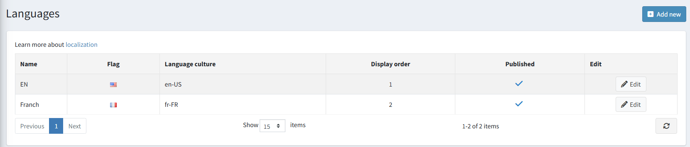
Note
您可以從官方的 翻譯 (Translations) 頁面下載新的語言包。
新增語言
若要新增語言，請點擊 新增。在 新增語言 視窗中，定義下列設定：
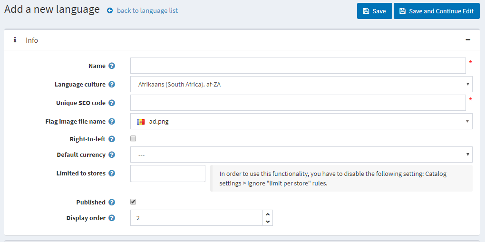
名稱 (Name)：新語言的名稱。
語言文化 (Language culture)：特定的語言代碼（例如，de-AT 代表奧地利德語）。
Note
更新 語言文化 欄位時，請確保已針對該文化安裝適當的 CLDR 套件。您可以在 設定 → 一般設定 頁面的 在地化 面板中，為指定的文化設定 CLDR。
唯一 SEO 代碼 (Unique SEO code)：當您擁有一個以上的已發布語言時，用於產生如
http://www.yourstore.com/en/等網址的兩個字母語言 SEO 代碼。Note
您應在 設定 → 一般設定 → 在地化設定 面板中啟用 多語言 SEO 友善網址 (SEO friendly URLs with multiple languages) 選項。
旗幟圖片檔名 (Flag image file name)：輸入旗幟圖片的檔案名稱。該圖片應儲存在
…/images/flags目錄下。您也可以從預定義清單中選擇圖片。若有需要，請勾選 由右至左 (Right-to-Left)（例如阿拉伯語或希伯來語）。
Note
啟用的佈景主題必須支援 RTL（擁有適當的 CSS 樣式檔）。此選項僅影響前台網站。
預設貨幣 (Default currency)：特定語言的貨幣。若未指定，則會使用第一個找到的貨幣（顯示順序最前者）。
限制於商店 (Limited to stores)：允許將此語言設定為特定商店使用。您可以從預先建立的清單中選擇商店。若未使用此選項，請將此欄位留空。
Note
若要使用商店限制功能，必須在 設定 → 目錄設定 → 效能 面板中停用 忽略「每間商店的限制」規則 (全站) 選項。
發布 (Publish)：發布該語言以使其生效，並讓商店訪客能夠選取。
顯示順序 (Display order)：語言的顯示順序。1 代表清單的最上方。
點擊 儲存 以儲存變更。
Note
由於語言文化僅在應用程式啟動時載入，因此在新增或刪除語言後，您必須重新啟動應用程式。
Note
新增語言後，您可以使用頁面頂端的 匯入資源 與 匯出資源 按鈕來匯入和匯出字串資源。語言編輯頁面上的 字串資源 面板，可讓您檢視現有的語言資源並手動新增資源。
匯入語言套件
若您希望在商店中新增語言，請執行以下步驟：
前往 nopCommerce 翻譯 頁面。
選擇對應的 nopCommerce 版本並下載所需的語言套件。
前往 設定 → 語言 並點擊 新增 按鈕。
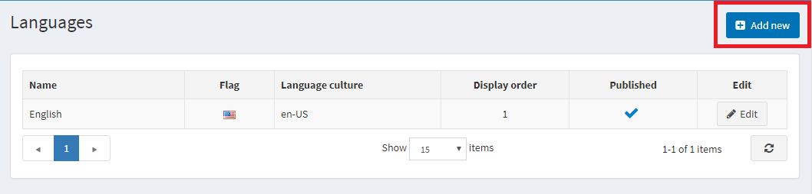
填寫必要的欄位，並點擊 儲存並繼續編輯。
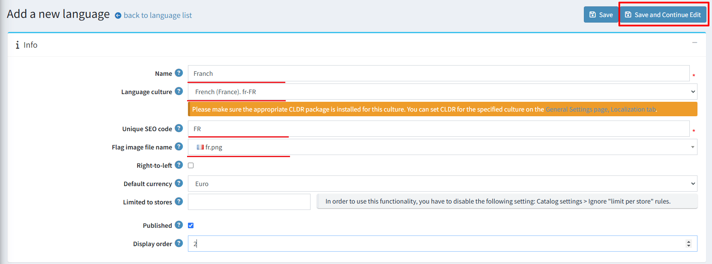
點擊 匯入資源。接著指定您下載的語言套件檔案 (*.xml) 路徑。
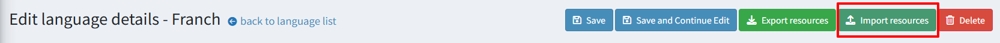
如果您發現翻譯有誤，或是想要自訂名稱，您可以在 字串資源 面板中編輯這些字串資源。
管理字串資源
前往 設定 → 語言。此時會顯示 語言 視窗：
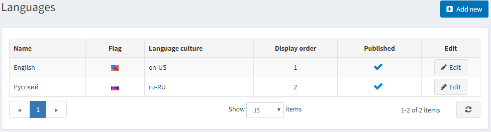
點擊該語言旁邊的 編輯 按鈕。在 編輯語言詳細資料 視窗中，找到 字串資源 面板。
例如，您想要將頁面頂端面板的名稱從「Administration」（如下圖所示）更改為「Control panel」。
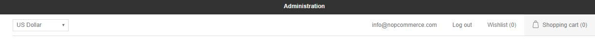
若要尋找您需要編輯的地區設定資源，請在 資源名稱 欄位中輸入「administration」。如果該資源存在，它將會被搜尋出來。點擊其旁邊的 編輯。
在 值 欄位中輸入新的數值，並點擊 更新。
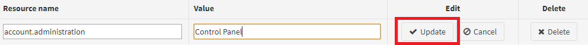
變更將會套用：
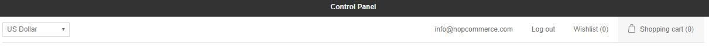
若要新增字串資源，請使用 新增記錄 面板。此視窗可讓您將新的資源記錄新增至網格中，說明如下：
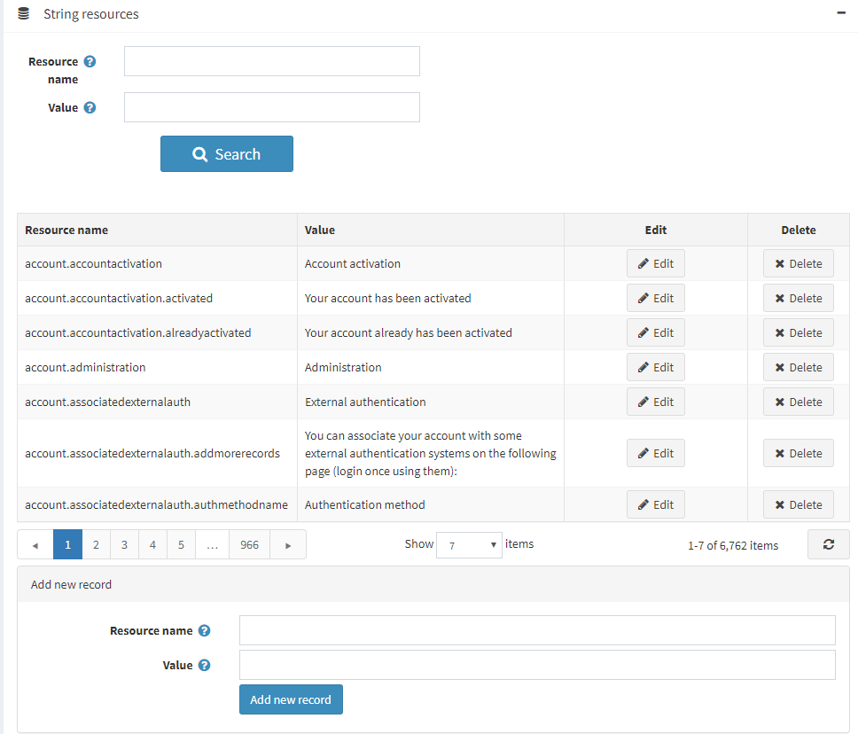
- 在 資源名稱 欄位中，輸入資源字串的識別碼。
- 在 值 欄位中，輸入此資源字串識別碼的對應值。
點擊 儲存。
在地化設定
若要設定在地化（Localization）相關設定，請前往 後台 → 設定 → 一般設定：
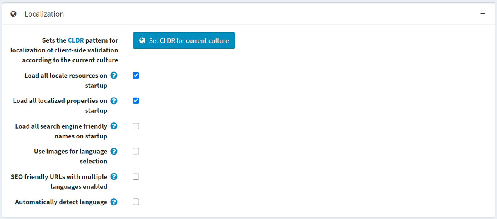
- 若要針對目前的文化特性（Culture）設定 CLDR 模式以進行用戶端驗證在地化，請點擊 設定目前文化特性的 CLDR 按鈕。
- 勾選 啟動時載入所有語系資源 核取方塊，以便在應用程式啟動時載入所有語系資源。啟用後，所有語系資源將會在應用程式啟動時載入。雖然這會導致應用程式啟動速度變慢，但後續頁面的開啟速度會更快。
- 勾選 啟動時載入所有在地化屬性 核取方塊，以便在應用程式啟動時載入所有在地化屬性。啟用後，所有在地化屬性（如在地化的商品屬性）將會在應用程式啟動時載入。雖然這會導致應用程式啟動速度變慢，但後續頁面的開啟速度會更快。此選項僅在啟用兩種或更多語言時使用。若您的型錄龐大（數千個在地化實體），則不建議啟用此功能。
- 勾選 啟動時載入所有 SEO 友善名稱 核取方塊，以便在應用程式啟動時載入所有 SEO 友善名稱（slug）。啟用後，所有網址別名將會在應用程式啟動時載入。雖然這會導致應用程式啟動速度變慢，但後續頁面的開啟速度會更快。若您的型錄龐大（數千個實體），則不建議啟用此功能。
- 勾選 使用圖片進行語言選擇 核取方塊，以便使用圖片代替語言名稱。
- 勾選 在啟用多語言時使用 SEO 友善 URL 核取方塊，以允許所有語言使用 SEO 友善的 URL。啟用後，您的 URL 將會呈現為
http://www.yourStore.com/en/或http://www.yourStore.com/fr/（SEO 友善格式）。Note
在更新 在啟用多語言時使用 SEO 友善 URL 設定後，您必須重新啟動應用程式，否則可能會導致錯誤。
- 勾選 自動偵測語言 核取方塊，以便根據顧客的瀏覽器設定偵測語言。
本地化實體
如果您在商店中安裝了超過一種語言，您將能夠輸入顯示給不同語言顧客的某些欄位。例如：
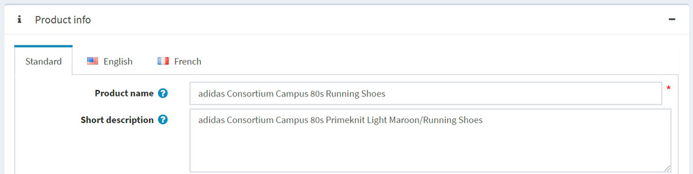
- 在 標準 (Standard) 頁籤中，輸入若未指定本地化欄位時，將顯示給顧客的文字。
- 在 以語言名稱命名的頁籤 中，輸入本地化的文字。